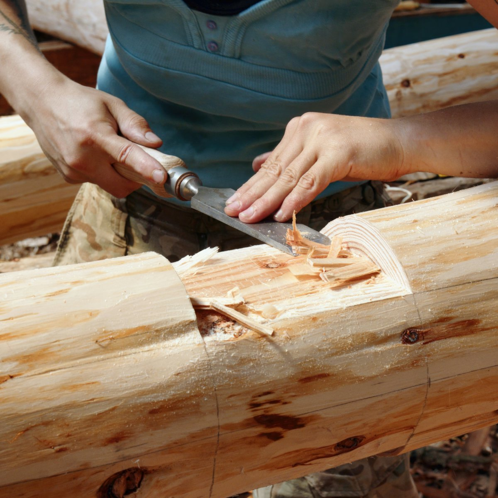
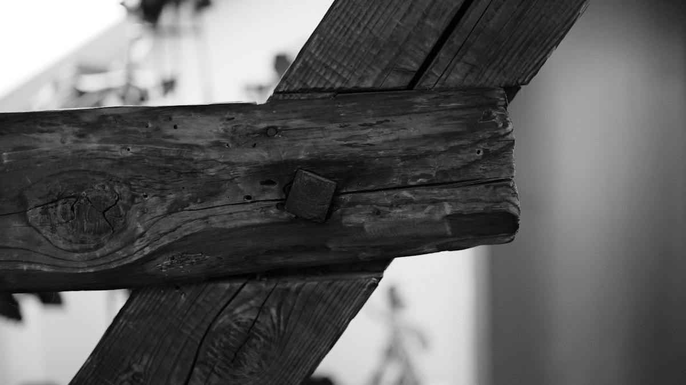
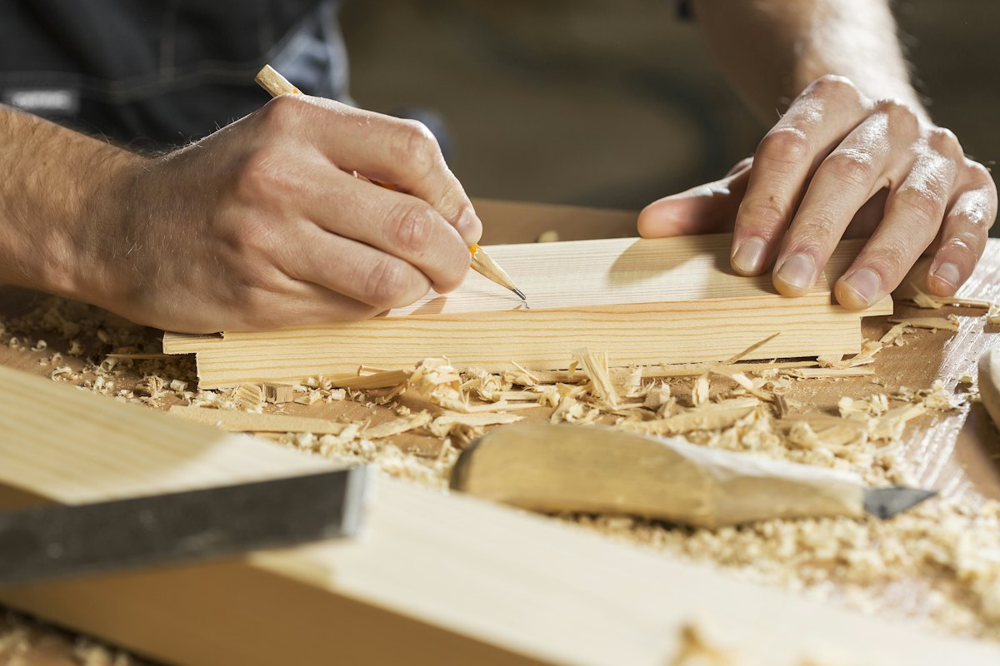
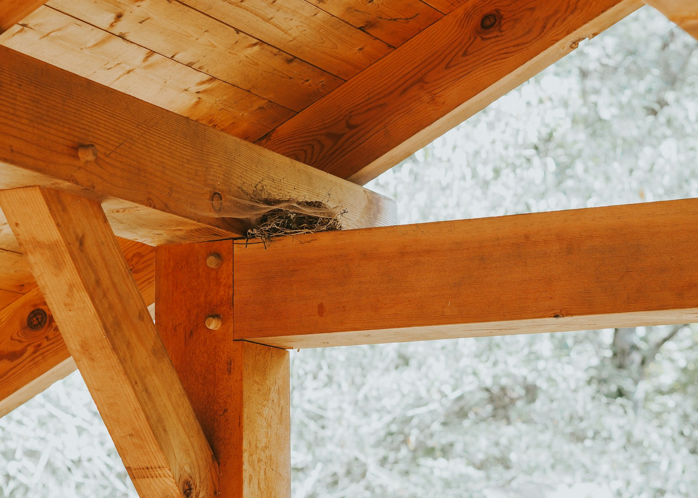

木にこだわる
木の家づくりを、100年以上。

工務店 東京都新宿区住吉町
明治32年創業。新宿区で120年以上続く工務店です。注文住宅・リフォームをご用命ください。
工務店 東京都新宿区住吉町
明治32年創業。新宿区で120年以上続く工務店です。注文住宅・リフォームをご用命ください。
継手（つぎて）
刻んで、
組む。
木と木を、形を刻んでつなぐ。大工の手仕事です。
「腰掛け蟻継ぎ」の3Dイメージです
茶室や数寄屋造りの家を多く手がけた大工棟梁から始まりました。社名の「大栄工業」は、2代目の尾身信蔵が会社設立にあたり、原点である大工の名を残そうとつけたものです。
1946年、焼け野原の新宿で大工業を再開。創業当時のように、建築から修繕まで、長く心地よく安心して暮らせる住まいをお届けしています。

木の家づくりを、100年以上。

長く心地よく、安心して暮らせる住まいを。

新宿から、都心の家づくりを。

…
| 受付 | 平日 9:00〜17:00 |
|---|
家づくりやリフォームのご相談、資料請求はお電話かメールでどうぞ。